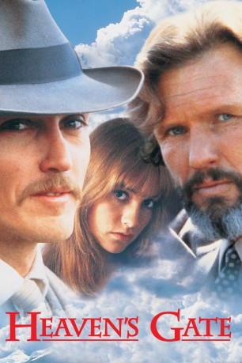

#8691 Heaven's Gate - Das Tor zum Himmel
Alternativ: Heaven's Gate
Auszeichnungen: für 1 Oscars nominiert
 
 IMDB-Wertung: 6.8 / 10
IMDB-Wertung: 6.8 / 10  Metascore: 0
Metascore: 0 
Der Spätwestern von Michael Cimino aus dem Jahr 1980 ging als einer der größten Hollywood-Flops in die Geschichte ein. Als historischer Hintergrund für die Handlung dient der "Johnson County War". Montana um 1890: Skrupellose Viehbarone wollen osteuropäische Siedler vertreiben und senden eine Todesschwadron aus. Der Marschall James Averill versucht den Einwanderern zu helfen.
Jahr: 1980
Dauer: 216 Minuten
FSK: 12
Land: USA Studio: United ArtistsTonspuren:
Untertitel:
Auflösung: 720p (1280x536) Größe: 9123 MB
Genre: Drama, Abenteuer, Western
Regisseur: Michael Cimino
Drehbuch: Michael Cimino
Soundtrack: David Mansfield
Darsteller:
Datei: X:\HD-Western-1980-1999\Heaven's Gate - Das Tor zum Himmel (1980, FSK12, 1280x536).mkv seit 25.04.2018
Festplatte: HD Eastern+Western
 Es gibt insgesamt 29 Filme in der Gruppe 'HD-Western-1980-1999'
Es gibt insgesamt 29 Filme in der Gruppe 'HD-Western-1980-1999'